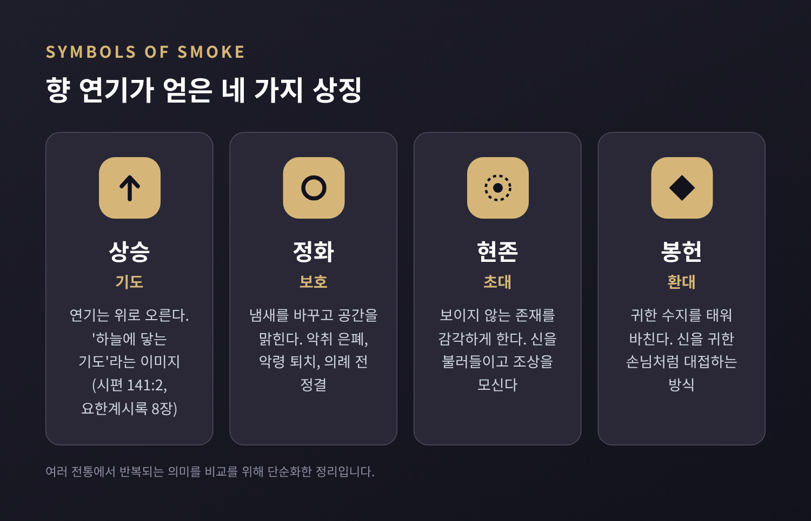
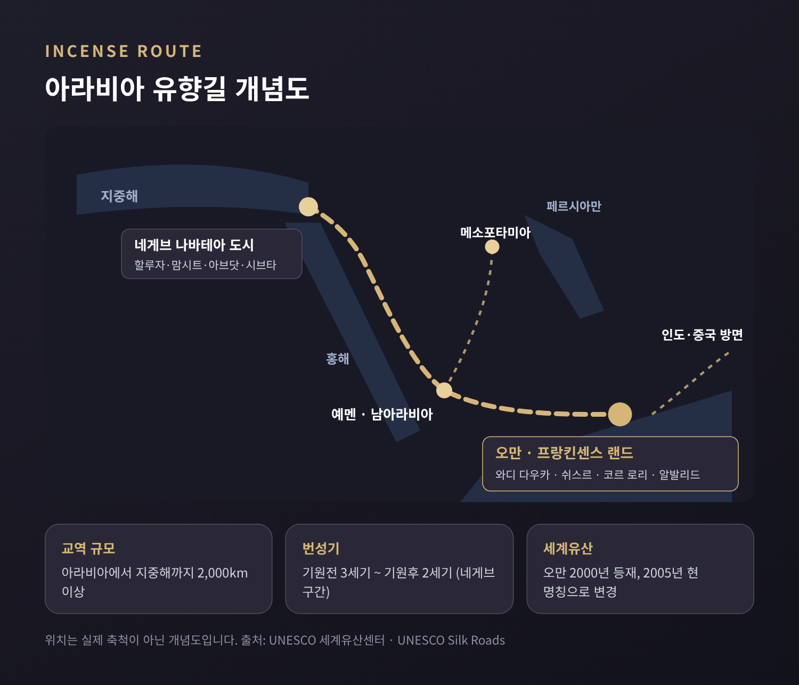
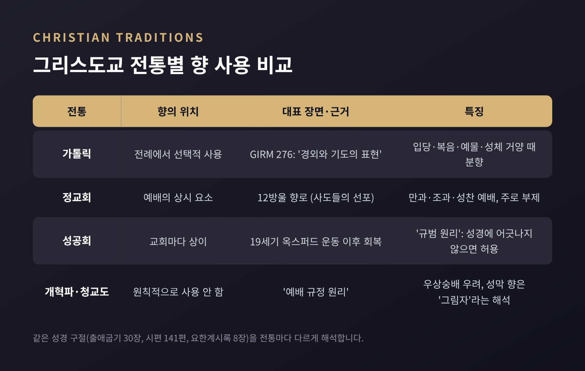
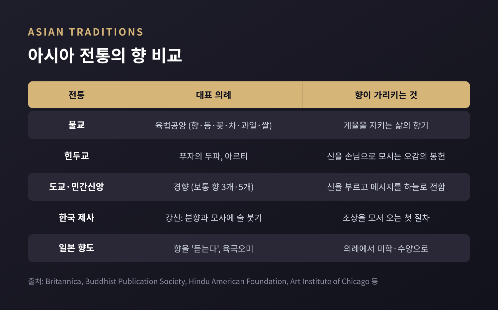
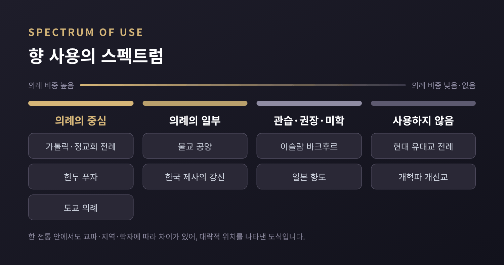

향의 비교종교학 — 피어오르는 연기는 왜 기도와 정화의 상징이 되었나
오늘은 향(香)을 비교종교학의 눈으로 살펴보려 합니다. 고대 이집트의 신전에서 산티아고 대성당의 거대한 향로, 한국 제사상 앞의 향로까지, 연기는 놀랄 만큼 많은 전통에서 기도와 정화를 뜻해 왔습니다. 어느 신앙이 옳은지를 따지는 글은 아닙니다. 서로 다른 전통이 같은 연기를 어떻게 다르게 읽어 왔는지를 차분히 비교해 보겠습니다.
먼저 세 줄로 요약하면 이렇습니다.
- 향 연기는 위로 오르고, 냄새를 바꾸고, 공간을 채운다는 물리적 성질 때문에 '하늘에 닿는 기도', '정화', '보이지 않는 존재의 현존'이라는 상징을 얻었습니다.
- 유향과 몰약은 아라비아 남부와 아프리카의 뿔에서 지중해·메소포타미아·인도·중국까지 오간 고대의 사치품이었고, 그 흔적이 유네스코 세계유산으로 남아 있습니다.
- 다만 모든 전통이 향을 쓰는 것은 아닙니다. 현대 유대교 전례에는 분향이 없고, 개혁파 개신교는 원칙적으로 거부하며, 이슬람에서는 의례 의무가 아닌 관습·권장의 영역에 놓입니다.
■ 향이란 무엇이고, 무엇으로 만드는가
브리태니커 백과사전은 향을 "수지 알갱이에 때로 향신료를 섞어, 태우면 향기로운 연기를 내는 것"으로 정의합니다. 보통 향로 속 숯 위에 뿌려 태우며, 무엇보다 '봉헌물'로 널리 쓰였습니다.
전통적인 주재료는 유향(프랑킨센스)과 몰약 같은 나무 수지입니다. 여기에 향나무, 껍질, 씨앗, 뿌리, 꽃이 더해졌습니다. 이슬람권에서는 침향, 곧 '우드(oud)'가 특히 귀하게 여겨집니다. 그리스도교 향로에는 유향 외에도 스티락스, 벤조인, 코펄 같은 수지가 들어갑니다.
17~18세기부터는 향료 산업의 화학물질이 천연 재료를 대신하기 시작했습니다. 오늘 우리가 쉽게 사는 향의 상당수가 이 흐름 위에 있습니다.

■ 고대 이집트와 메소포타미아 — 신이 향기를 맡는다는 생각
고대 이집트에서 향은 종교 의례의 중심에 있었습니다. 태양신 아문-라에게 바치는 매일의 봉헌과 장례 의례에 빠지지 않았습니다. 브리태니커에 따르면 이집트인은 향이 악취를 가리고, 악령을 물리치며, 신의 현존을 드러내고 신을 기쁘게 한다고 믿었습니다. 나아가 죽은 이의 영혼이 향 연기를 타고 하늘로 오른다고 여겼습니다.
향의 원료는 대부분 밖에서 들여와야 했습니다. 기록상 최초의 '푼트(Punt)' 원정은 기원전 25세기 제5왕조 사후레 왕 때로 전합니다. 하트셉수트 여왕은 재위 9년에 다섯 척의 선단을 보냈고, 데이르 엘바하리 장제전 부조에는 살아 있는 몰약 나무를 실어 오는 장면이 새겨졌습니다. 푼트가 어디였는지는 지금도 논쟁 중입니다. 아프리카의 뿔로 보는 견해가 다수지만, 아라비아 서해안설, 두 지역을 모두 아울렀다는 설도 있습니다.
이집트에는 '키피(kyphi)'라는 혼합향도 있었습니다. 프톨레마이오스 시대 에드푸와 필라에 신전 벽에 세 가지 제조법이 새겨져 있는데, 모두 열여섯 가지 재료로 이루어져 있습니다. 그 가운데 일부 재료는 아직도 정체가 확인되지 않았습니다.
메소포타미아도 다르지 않았습니다. 바빌로니아인은 기도할 때와 신탁을 구할 때 향을 널리 썼습니다. 『길가메시 서사시』 제11토판에는 대홍수가 끝난 뒤 우트나피쉬팀이 산 앞에서 향을 피우는 장면이 나옵니다. 갈대와 삼나무, 도금양 향이 오르자 "신들이 그 달콤한 향기를 맡고 제물 위의 파리처럼 모여들었다"고 적혀 있습니다. 그리스 역사가 헤로도토스는 바빌론의 큰 제단에서 해마다 유향 1,000탈란톤을 태웠다고 전합니다. 고대 저자의 전언이니 정확한 통계로 받아들이기는 어렵습니다.
신이 향기를 '맡는다'는 발상은 훗날 여러 전통에서 다른 언어로 변주됩니다.
■ 유향길과 '프랑킨센스 랜드' — 향을 실어 나른 교역로
향을 이해하려면 경제사를 함께 봐야 합니다. 유향과 몰약은 금처럼 귀한 물건이었고, 그 산지는 한정되어 있었기 때문입니다.
오만 남부의 '프랑킨센스 랜드(Land of Frankincense)'는 2000년 '프랑킨센스 트레일'이라는 이름으로 유네스코 세계유산에 올랐고, 2005년 지금의 이름으로 바뀌었습니다. 구성 유산은 네 곳입니다. 유향나무(Boswellia sacra)가 자라는 와디 다우카, 대상(隊商)이 쉬어 가던 오아시스 쉬스르, 그리고 바다로 향을 내보내던 항구 코르 로리와 알발리드입니다. 유네스코는 이 교역을 "고대와 중세 세계에서 가장 중요한 교역 활동 가운데 하나"로 평가합니다. 유향은 지중해와 홍해에서 메소포타미아, 인도, 중국까지 흘러갔습니다.
길의 북쪽 끝에도 세계유산이 있습니다. 이스라엘 네게브 사막의 할루자·맘시트·아브닷·시브타는 나바테아인의 도시였습니다. 유네스코 설명에 따르면 이 '향료길'은 예멘과 오만에서 지중해까지 2,000km가 넘는 교역망이었고, 기원전 3세기부터 기원후 2세기까지 번성했습니다.
향은 멀리 로마 제국의 변방까지 닿았습니다. 영국 브래드퍼드대 연구진이 3~4세기 로마령 브리튼의 매장 49기를 분석했더니, 네 곳에서 남아라비아 또는 동아프리카산 유향이 나왔습니다. 연구진은 이것을 부패 냄새를 막는 동시에 망자의 높은 신분을 드러내는 표지로 해석했습니다.

이 이야기에는 현재진행형의 그늘도 있습니다. 2019년 『네이처 서스테이너빌리티』에 실린 연구는 지금 유향의 주공급원인 Boswellia papyrifera가 빠르게 줄고 있다고 보고했습니다. 에티오피아·에리트레아·수단의 23개 개체군 가운데 18곳에서 어린 나무가 거의 보이지 않았고, 연구진은 유향 생산량이 약 20년 안에 절반으로 줄 수 있다고 내다봤습니다. 수천 년 이어진 기도의 연기가 생태 문제와 맞닿아 있는 셈입니다.
■ 히브리 성서의 분향단 — "나의 기도가 분향함과 같이"
히브리 성서는 향에 관해 매우 구체적인 규정을 남겼습니다. 출애굽기 30장은 아카시아 나무로 가로·세로 한 규빗, 높이 두 규빗의 분향단을 만들어 순금으로 입히라고 명합니다. 제사장 아론은 아침에 등잔을 손질할 때, 저녁에 등잔을 켤 때 향을 피워 "끊이지 않는 향"이 되게 해야 했습니다.
향의 배합도 정해져 있었습니다. 나타프(스탁테), 나감향(오닉스), 풍자향(갈바눔), 순수한 유향을 같은 분량으로 섞고 소금을 쳐서 거룩하게 했습니다. 이 배합을 개인 용도로 만드는 일은 금지되었습니다. 후대 전승은 성전의 향 '크토레트'를 열한 가지 향료로 설명하는데, 토라에 명시되지 않은 나머지 재료가 무엇인지는 지금도 의견이 갈립니다.
향과 기도를 직접 이어 붙인 구절도 있습니다. 시편 141편 2절은 이렇게 노래합니다. "나의 기도가 주 앞에 분향함과 같이 되며 나의 손 드는 것이 저녁 제사 같이 되게 하소서." 이 비유는 훗날 그리스도교 전례의 핵심 근거가 됩니다.
흥미로운 점은 그 다음입니다. 브리태니커는 오늘날 유대교 전례에서 향이 아무 역할도 하지 않는다고 설명합니다. 성전이 무너진 뒤 분향은 실제 행위가 아니라 기도문 속 '낭송'으로 남았습니다. 2020년 3월 이탈리아 랍비회의가 크토레트를 중심으로 코로나19 기도문을 지은 것도 그 연장선에서 볼 수 있습니다.
■ 가톨릭과 정교회의 향로 — 보타푸메이로가 그리는 65m의 호
브리태니커에 따르면 초대 교회는 4세기 무렵부터 성찬 예식에 향을 쓰기 시작했습니다. 향은 위로 오르는 기도와 성인들의 공로를 상징했습니다. 요한계시록 8장도 "향연이 성도의 기도와 함께 천사의 손에서 하나님 앞으로 올라갔다"고 묘사합니다.
가톨릭의 『로마 미사 경본 총지침』 276항은 한 문장으로 정리합니다. "분향은 경외와 기도의 표현이다." 분향은 미사의 어느 형식에서든 원하면 할 수 있습니다. 입당 행렬, 제대와 십자가, 복음 선포, 예물 준비, 성체 거양 때가 대표적입니다. 성체와 복음서, 사제와 회중에게는 향로를 세 번, 성인의 유해나 성화에는 두 번 흔든다는 세부 규정도 있습니다.
정교회 향로에는 보통 방울 열두 개가 달려 있습니다. 사슬 네 개에 방울이 세 개씩 달리는데, 열두 방울은 사도들의 복음 선포를, 네 사슬은 네 복음서 저자를 상징한다고 풀이합니다. 만과와 조과, 성찬 예배에서 주로 부제가 분향을 맡습니다.
가장 장대한 장면은 스페인 산티아고 데 콤포스텔라 대성당에서 볼 수 있습니다. '보타푸메이로(Botafumeiro)'라 불리는 이 향로는 높이 1.93m, 무게 약 80kg입니다. 다만 무게는 자료마다 50kg에서 160kg까지 차이가 큽니다. 지금의 향로는 1851년 은세공사 호세 로사다가 만든 것입니다. '티라볼레이로'라 불리는 여덟 명이 밧줄을 당기면, 향로는 성당 양쪽 문 사이로 65m의 호를 그리며 최고 시속 약 68km로 날아오릅니다. 11세기 기원설도 있지만, 처음 문헌에 등장하는 것은 12세기 『칼릭스티누스 사본』입니다.
■ 같은 그리스도교 안의 '거부' — 개신교 일부는 왜 향을 내려놓았나
모든 그리스도교 전통이 향을 쓰지는 않습니다. 종교개혁기 츠빙글리와 칼뱅 계열의 개혁파, 그리고 청교도는 '예배 규정 원리'를 따랐습니다. 공예배는 성경이 구체적으로 지시한 것에 근거해야 한다는 원칙입니다.
반대의 이유는 대체로 두 갈래입니다. 하나는 감각적 요소가 예배자의 마음을 하나님이 아닌 피조물로 이끌 수 있다는 우상숭배에 대한 우려입니다. 다른 하나는 성막의 향이 그리스도를 예표하는 '그림자'였으므로, 이를 되살리면 그리스도의 희생이 충분하지 않다는 뜻이 될 수 있다는 신학적 논리입니다.
성공회는 사정이 조금 다릅니다. '규범 원리'에 따라 성경에 어긋나지 않는 한 의식을 허용하는 편입니다. 종교개혁 직후에는 향을 거의 쓰지 않았지만, 19세기 옥스퍼드 운동 이후 널리 회복되었습니다. 찬성하는 쪽은 출애굽기의 성막, 말라기 1장 11절, 요한계시록 5장과 8장을 근거로 듭니다.
예전엔 향이 '로마식' 관행의 상징으로 경계되었고, 지금은 교파와 교회마다 선택의 문제로 남아 있습니다. 같은 성경 구절을 두고 어떤 이는 '전례의 근거'를, 어떤 이는 '이미 성취된 그림자'를 읽는 것입니다.

■ 불교의 향 공양 — 연기 대신 '계(戒)의 향기'
불교에서도 향은 빠지지 않습니다. 브리태니커는 불교도가 축제와 입문식, 일상 의례에서 향을 태운다고 설명합니다. 한국 불교에는 큰 행사 때 부처님께 향·등·꽃·차·과일·쌀을 올리는 '육법공양'이 있습니다.
상좌부 불교의 재가 수행 안내서는 공양물마다 성찰의 주제를 붙입니다. 꽃은 곧 시드는 몸의 무상함을, 등불은 번뇌의 어둠을 밝히는 법(法)의 빛을 떠올리게 합니다. 향은 계율을 지키는 삶의 향기를 상기시킵니다. 『법구경』은 "덕의 향기는 견줄 것이 없고, 바람을 거슬러서도 퍼진다"고 말합니다.
같은 안내서는 단서도 붙입니다. 물질 공양이 최고의 공경은 아니며, 보시·지계·수행·지혜의 실천이 붓다를 기리는 가장 좋은 방법이라는 것입니다. 공양이 실천을 대신하면 불교가 형식만 남은 의식이 될 수 있다는 경고입니다.
한국에는 이 문화를 보여주는 유물이 많습니다. 국립중앙박물관 연구에 따르면 고려의 불교 의례는 분향으로 시작하는 경우가 많았습니다. 손잡이 달린 향로는 8세기 중엽 당나라에서 처음 나타나 9세기 전반 통일신라로 전해졌고, 고려에서는 은입사 향완(香垸) 같은 독자적 형식이 발전했습니다.
■ 힌두 푸자의 두파와 아르티 — 신을 손님으로 모시는 감각의 예배
힌두교의 '푸자(pūjā)'는 집안의 짧은 의례부터 사원의 정교한 의식까지를 아우르는 예배입니다. 브리태니커는 푸자를 신을 '귀한 손님'처럼 모시는 일련의 봉사로 설명합니다. 아침에 깨우고, 씻기고, 옷을 입히고, 식사를 올리고, 밤에 재우는 식입니다.
전통적인 푸자는 열여섯 단계까지 이어질 수 있고, 그 핵심 다섯 단계는 사람의 오감에 대응한다고 합니다. 힌두 미국재단의 가정 푸자 안내에 따르면 간략한 푸자의 다섯 봉헌은 향유(간다), 꽃(푸슈파), 향(두파), 등불(디파), 음식(나이베디야)입니다. 두파를 올릴 때는 "향을 맡게 해 드립니다(dhūpam āghrāpayāmi)", 등불을 올릴 때는 "등을 보여 드립니다(dīpaṁ darśayāmi)"라고 읊습니다. 신에게 냄새를 '맡게' 하고 빛을 '보게' 한다는 표현이 인상적입니다.
'아르티(ārti)'는 신상 앞에서 기(ghee)나 장뇌로 불붙인 등을 흔드는 의식입니다. 시계 방향으로 세 번 이상 돌리며 기도나 찬가를 부르고, 사원과 가정 예배에서 가장 자주 볼 수 있는 장면 가운데 하나입니다. 힌두교만이 아니라 자이나교 의례에서도 행해집니다. 푸자 전체에 흐르는 원칙은 정결입니다. 예배자 자신과 장소, 봉헌물을 모두 깨끗이 하는 데서 시작합니다.
■ 도교·유교 제례와 한국 제사 — 하늘로 메시지를 보내는 향로
중국 전통에서 향로는 신과 인간을 잇는 통로였습니다. 시카고 미술관의 도교 전시 해설은 이렇게 적습니다. "향로의 연기는 신들을 끌어들이는 동시에 공동체의 메시지를 하늘로 실어 날랐다."
사당과 가정에서 향을 올리는 '경향(敬香)'은 두 손에 향을 들고 절한 뒤 향로에 꽂는 의례입니다. 보통 세 개나 다섯 개를 올리는데, 홀수가 양(陽)과 연결되어 길하다고 여기기 때문입니다. 조상을 모실 때는 이를 '경조(敬祖)'나 '배조(拜祖)'라고도 부릅니다.
한국의 제사는 주자학과 함께 고려 말에 들어와 조선에서 널리 장려되었고, 중기 이후 평민에게도 일반화되었습니다. 제사의 첫머리인 '강신(降神)'에서 제주는 향을 피우고, 술을 모삿그릇에 세 번에 나누어 붓습니다. 이를 두고 흔히 "향으로 하늘의 혼(魂)을 부르고, 술로 땅의 백(魄)을 부른다"고 풀이합니다. 다만 이 설명은 대중 해설에서 주로 보이며, 지역과 가문, 예서에 따라 절차와 해석이 조금씩 다를 수 있습니다.
한국 향 문화의 정점을 보여주는 유물도 있습니다. 1993년 부여 능산리 절터에서 출토된 국보 백제금동대향로입니다. 높이 60cm 남짓으로, 뚜껑에는 다섯 겹 74개의 산봉우리와 다섯 악사가, 몸체에는 연꽃이, 받침에는 용이 새겨져 있습니다. 이 향로를 두고는 불교 공예로 보는 해석, 신선 세계를 담은 도교적 세계관으로 보는 해석, 왕권의 상징으로 보는 해석이 함께 존재합니다. 정상의 새가 봉황인지 가루다인지를 두고도 견해가 갈립니다.

■ 일본 향도와 이슬람의 바크후르 — 의례와 관습의 경계
일본에서는 향이 독특한 길을 걸었습니다. 향은 6세기 불교와 함께 한반도를 거쳐 전해졌고, 『일본서기』에는 595년 침향 목재가 아와지섬에 떠밀려 왔다는 기록이 남아 있습니다. 일본 향 문화의 첫 공식 기록으로 꼽힙니다. 헤이안 귀족은 분말 혼합향인 '다키모노'를 즐겼고, 무로마치 후기에는 향목을 태워 감상하는 예도 '향도(香道)'가 형성되었습니다. 쇼군 아시카가 요시마사의 명으로 산조니시 사네타카와 시노 소신이 향목을 정리했고, 두 사람은 각각 오이에류와 시노류의 시조로 꼽힙니다.
향도에서는 향을 '맡는다'고 하지 않고 '듣는다(聞く)'고 말합니다. 향목을 여섯 산지와 다섯 맛으로 분류하는 '육국오미(六國五味)', 향을 돌려 듣고 재료를 맞히는 놀이도 전해집니다. 불교 의례에서 출발했지만, 지금은 종교 의례라기보다 미학과 수양의 문화에 가깝습니다.
이슬람의 향 문화는 또 다른 경계를 보여줍니다. 아라비아 반도에서는 '바크후르(bakhūr)'라 불리는 향과 침향(우드)이 가정과 모스크에서 널리 쓰입니다. 메카 대모스크와 카바에는 하루 여러 차례 우드 향을 피운다는 보도도 있습니다. 예언자 무함마드가 향을 썼다는 전승이 있고, "기도하는 장소를 깨끗이 하고 향기롭게 하라"는 하디스에 근거해 모스크를 향기롭게 하는 일을 권장하는 학자들이 있습니다.
그러나 향은 정해진 예배(살라트) 절차의 구성 요소가 아닙니다. 학자들 사이 견해도 하나가 아닙니다. 이븐 하자르는 모스크 분향을 권장했지만, 이맘 말리크는 이를 바람직하지 않게 보았다고 전합니다. 향으로 복을 구하거나 액운을 막으려는 사용은 미신이라며 엄하게 경계하는 견해도 있습니다. 같은 연기라도 '의례'가 아니라 '청결과 환대의 관습'으로 자리 잡은 사례입니다.

■ 왜 하필 연기였을까 — 다섯 가지 공통 문법
여러 전통을 나란히 놓으면 몇 가지 공통 문법이 보입니다.
- 상승 — 연기는 위로 올라갑니다. 시편과 요한계시록, 정교회 해설, 도교의 향로 설명, 이집트의 영혼 상승 관념이 모두 '하늘에 닿는다'는 이미지를 공유합니다.
- 정화 — 향은 냄새를 바꿉니다. 이집트의 악령 퇴치, 힌두 푸자의 정결, 향도의 '더러움을 씻는' 덕목, 모스크의 청결이 이어집니다.
- 현존과 초대 — 향은 보이지 않는 것을 감각하게 합니다. 『길가메시』의 신들이 향기에 모여들고, 한국 제사는 향을 피워 조상을 모십니다.
- 환대와 봉헌 — 귀한 물건을 태워 바칩니다. 힌두의 '손님 대접', 불교의 공양, 성전의 크토레트가 그렇습니다.
- 내면화 — 결국 향은 마음을 가리킵니다. 불교의 '계의 향기', 시편의 '기도 같은 향'은 물질보다 그 뜻을 앞세웁니다.
물론 이것은 비교를 위한 정리일 뿐입니다. 각 전통 안에서 향의 의미는 신학과 역사, 지역에 따라 훨씬 섬세하게 갈라집니다. 한 문화의 해석을 다른 문화에 그대로 덮어씌우지 않는 것이 비교종교학의 기본 예의라고 생각합니다.
정리하면 이렇습니다. 향은 수천 년 동안 대륙을 건너 교역된 물건이자, 사람들이 보이지 않는 것을 향해 마음을 보내는 방식이었습니다. 어떤 전통은 그 연기를 전례의 중심에 두었고, 어떤 전통은 같은 이유로 조심스럽게 내려놓았습니다.
"연기는 같아도, 그것을 읽는 문법은 전통마다 다르다."
다음에 어디선가 향 냄새를 맡게 되신다면, 그 연기가 어떤 길을 건너왔는지 잠시 떠올려 보시길 권합니다. 그 짧은 멈춤만으로도 낯선 이웃의 기도에 조금 더 가까워질 수 있을 것입니다.
■ 출처
- Encyclopaedia Britannica, "Incense" — https://www.britannica.com/topic/incense
- Encyclopaedia Britannica, "Puja" — https://www.britannica.com/topic/puja
- Encyclopaedia Britannica, "Arti" — https://www.britannica.com/topic/arti
- UNESCO Silk Roads, "Land of Frankincense" — https://en.unesco.org/silkroad/silk-road-themes/world-heritage-sites/land-frankincense
- UNESCO World Heritage Centre, "Incense Route – Desert Cities in the Negev" — https://whc.unesco.org/en/list/1107
- Wikipedia, "Land of Frankincense" — https://en.wikipedia.org/wiki/Land_of_Frankincense
- Wageningen University & Research, "Frankincense in peril" (2019) — https://www.wur.nl/en/newsarticle/frankincense-in-peril.htm
- Biblical Archaeology Society, "Frankincense and other resins were used in Roman burials across Britain" — https://www.biblicalarchaeology.org/daily/news/frankincense-and-other-resins-were-used-in-roman-burials-across-britain/
- 출애굽기 30장 (BibleHub) — https://biblehub.com/exodus/30.htm
- 시편 141:2, 요한계시록 5:8, 8:3–4 (ESV) — https://www.esv.org/Psalm+141:2;Revelation+5:8;Revelation+8:3–4/
- Herodotus, Histories 1.183 (Perseus) — https://cts.perseids.org/read/greekLit/tlg0016/tlg001/perseus-eng2/1.183.1-1.183.3
- Livius.org, The Great Flood: Gilgameš — https://livius.org/articles/misc/great-flood/flood3_t-gilgamesh
- Wikipedia, "Kyphi" — https://en.wikipedia.org/wiki/Kyphi
- Wikipedia, "Botafumeiro" — https://en.wikipedia.org/wiki/Botafumeiro
- Liturgy Office England & Wales, GIRM 276 (Incense) — https://liturgyoffice.org/Resources/GIRM/Opportunities/Symbols/I045-Incense.pdf
- OrthodoxWiki, "Censer" — https://orthodoxwiki.org/Censer
- Christian Research Institute, "The Prayers Rose Like Incense" — https://www.equip.org/articles/the-prayers-rose-like-incense-anglican-worship-and-the-normative-principle/
- European Academy on Religion and Society, "Odours of sanctity" (2023) — https://europeanacademyofreligionandsociety.com/news/odours-of-sanctity-the-use-of-incense-in-religious-settings/
- IslamWeb, Fatwa No. 33472 — https://islamweb.net/en/printfatwa.php?id=33472
- Art Institute of Chicago, "Taoism and the Arts of China" — https://archive.artic.edu/taoism/church/introe.php
- Wikipedia, "Jingxiang" — https://en.wikipedia.org/wiki/Jingxiang
- Buddhist Publication Society, "Lay Buddhist Practice: Offerings" — https://cdn.britannica.com/primary_source/gutenberg/PGCC_classics/lib/bps/wheels/wheel206/offerings.html
- Hindu American Foundation, "Pūjā at Home" — https://www.hinduamerican.org/?p=25222
- Lee Yongjin, "Tradition and Originality in Buddhist Incense Burners of the Goryeo Dynasty", Journal of Korean Art & Archaeology vol.10 (2016) — https://ijkaa.org/v.10/0/95/65
- Park Kyungeun, "Taoist Iconography of the Baekje Gilt-bronze Incense Burner", Journal of Korean Art & Archaeology vol.8 (2014) — https://www.ijkaa.org/assets/pdf/129/jkaa-8-62.pdf
- Wikipedia, "Incense in Japan" — https://en.wikipedia.org/wiki/Japanese_incense
- Traditional Kyoto, "Kodo – The Way of Incense" — https://traditionalkyoto.com/culture/kodo-the-way-of-incense/
- 국가기록원, 기록으로 보는 제사 — https://theme.archives.go.kr/next/koreaOfRecord/jesa.do
- 경향신문, "부처님께 공양했던 차" (2017-08-10) — https://www.khan.co.kr/article/201708101657001
- 매일신문, 설 차례상 원칙과 차례 순서 (2020-01-24) — https://www.imaeil.com/page/view/2020012111173853586